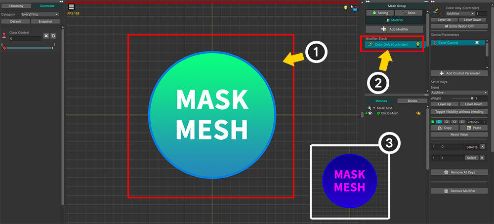
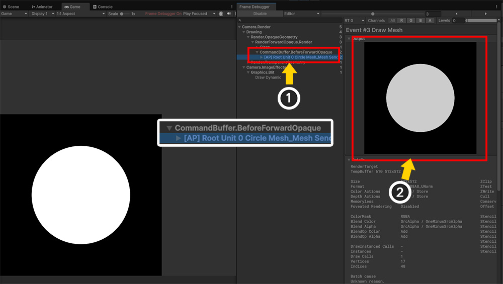
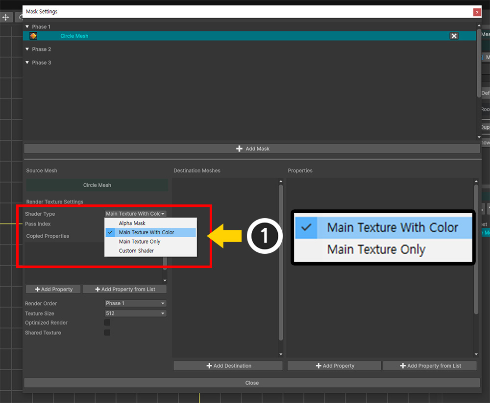
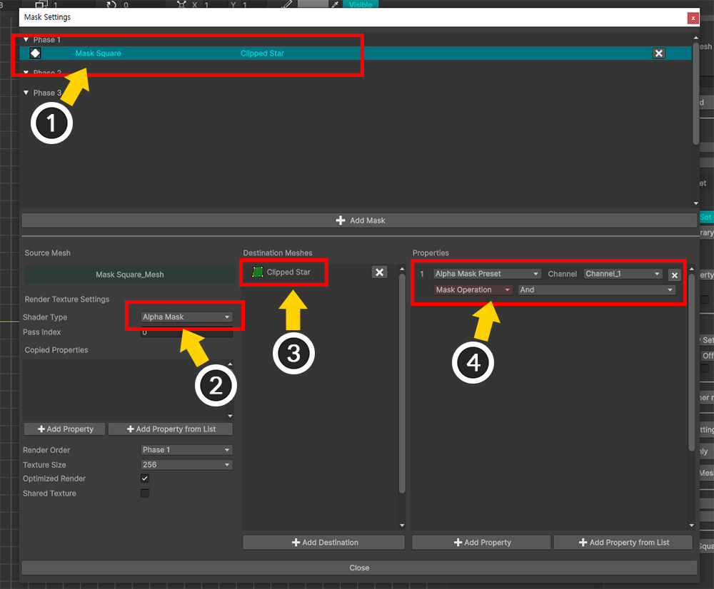
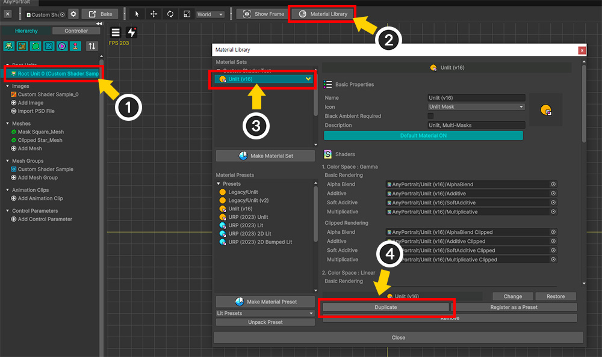
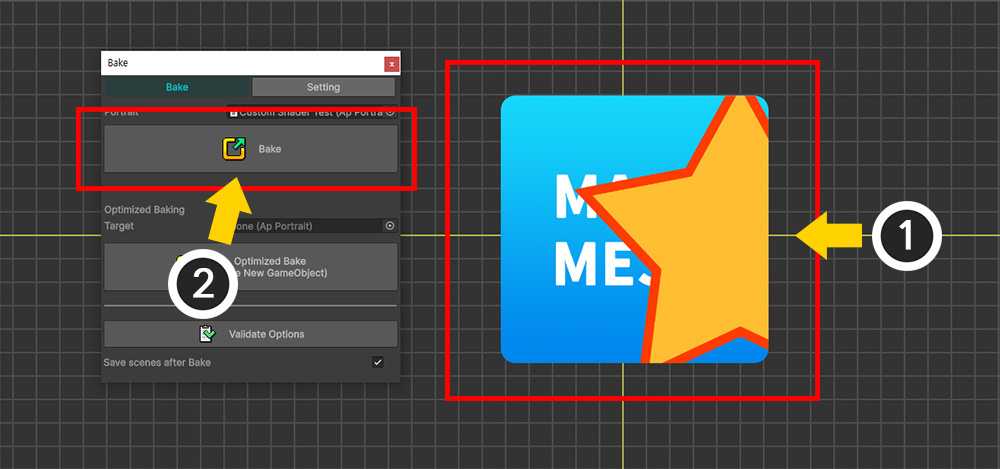
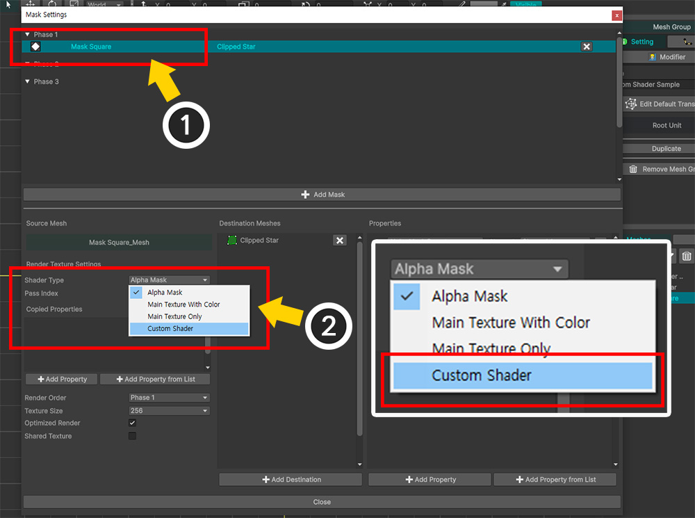
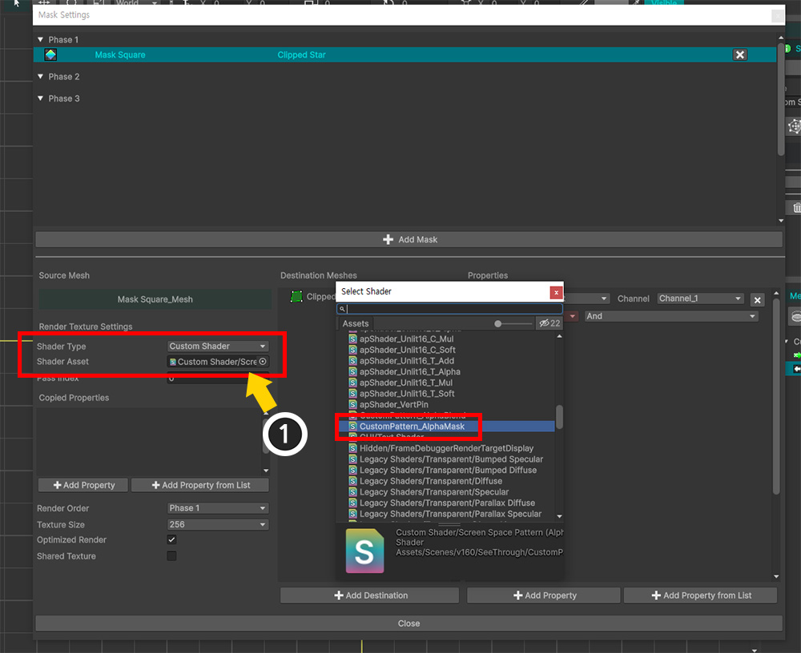
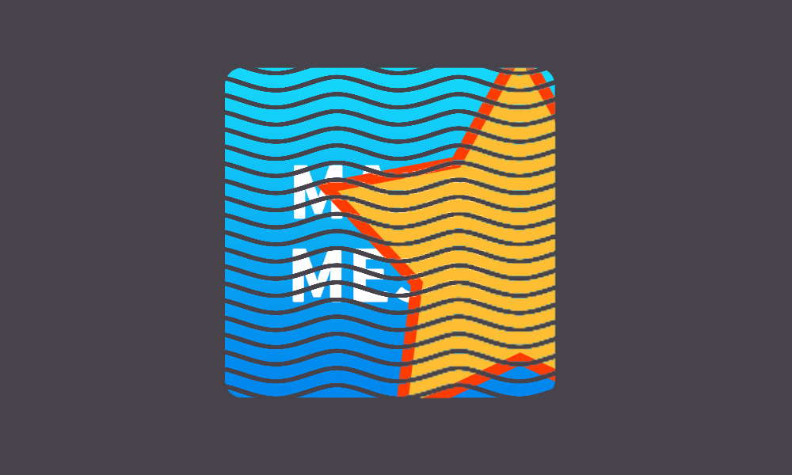
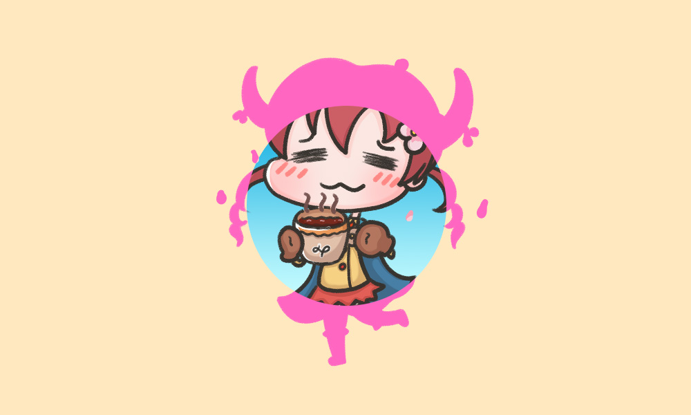

AnyPortrait > Manual > Mask and Custom Shader
Mask and Custom Shader
1.6.0
Using the Mask function, you can create various effects in addition to the basic Clipped by Alpha Mask.
Let's learn how to replace the shader used in mask processing or write it yourself.
Change the shader that generates the mask

In the process of creating a mask, Alpha Mask Shader is used by default.
If you change the shader, Render Texture will be created differently.
Let's check how the render texture changes depending on the shader.

(1) This is a prepared mesh for testing the mask render texture.
(2) Add the Color Only (Controller) modifier to check the change in the render texture according to the modifier.
(3) The color of the mesh changes according to the control parameter.

(1) Open the Mask Setting Dialog and create Mask Data for the prepared mesh.
(2) We will test by selecting the values of the Shader Type option one by one.
For now, let's select the default value, "Alpha Mask".
Let's do Bake and test it in the Unity scene.

In this example, let's check the generated render texture through Frame Debugger rather than viewing the clipping result.
(1) Run Window > Analysis > Frame Debugger from the Unity menu.
(The menu path may be different depending on the Unity version.)

(1) Run the game.
(2) Change the color of the mesh by adjusting the control parameter.
(3) Press the Enable button in Frame Debugger.

The game will pause and you can check each stage of rendering.
(1) Since the mask is generated through the command buffer, find and select the item that the command buffer operates on during the rendering process.
The command buffer is named AP + Root Unit name + Mesh name + Mask processing method, then you can find this.
(2) If you check the result of the command buffer, you can see that the mask is rendered to the render texture.
Earlier, since we selected Alpha Mask as the Shader Type of the mask, the render texture is rendered as a black and white image.
Then now, let's check how the render texture changes when we change the Shader Type.

(1) Open the Mask Setting Dialog again, select Mask Data, then select Shader Type once each as "Main Texture With Color" and "Main Texture Only" and check the results.

If you run the game and run the Frame Debugger to view the output of the command buffer, you will see that the mask is rendered differently, as shown above.
To summarize, you can see that each Shader Type works as follows:
- Alpha Mask: The value of the Alpha channel of the result including the color operation of the modifier is rendered in grayscale.
- Main Texture With Color: The color operation of the modifier is applied to the render texture. It is the same as what is rendered on the screen.
- Main Texture Only: The operation of the modifier is ignored, and only the color of the original image is reflected in the render texture.
Custom Mask Shader
We saw in the previous example that changing the shader that generates the mask causes the render texture to be rendered differently.
This time, let's look at the situation and method of writing a custom shader ourselves.

The basic process of rendering a render texture as a mask is as above.
The mask mesh is rendered with Normal Shader, while the Render Texture is rendered with Alpha Mask Shader.
In order for Alpha Mask Shader to work, values must be entered for the "_Color" and "_MainTex" properties.
Since these values can change in real time due to the influence of modifiers and animations, the values applied to Normal Shader are copied and applied as is for each update.

Let's say you're rendering a mesh with a custom shader using Material library(Related page).
If the result of this custom shader affects the mask, then the Alpha Mask Shader will need to be rewritten accordingly.
In particular, if the custom shader is rendered by additional properties, then the Alpha Mask Shader should also receive those properties.
Therefore, in order for the mask generation shader to work properly, it must copy the values of the properties from the original shader.
The following example covers the process of applying a custom shader to a mesh and additionally writing a Custom Mask Shader to match it.
Note
Custom Mask Shader does not always require Normal Shader to be written as a custom shader.
The following example required two custom shaders to demonstrate a situation where additional properties other than the basic properties ("_Color", "_MainTex") need to be copied.
Applying custom shaders to Normal Shader and Mask Shader depends on the situation and can be used freely.

We have prepared one mesh for the mask ("Mask Square") and one mesh for clipping ("Clipped Star").

(1) Open the Mask Setting Dialog and add Mask Data for "Mask Square" as the mask mesh.
(2) Set Shader Type to the default value "Alpha Mask".
(3) Add "Clipped Star" as the target mesh.
(4) Add "Alpha Mask Preset" as the passed property.
Once this process is done, normal alpha mask clipping will be performed.
Now let's make "Mask Square" be rendered by Custom Shader.
The following shader code is based on the basic "Unlit" shader, and contains "the content of the pattern texture that is mapped through the screen coordinate to affect the Alpha value."
Note
For information on how to write a custom shader, please refer to the Related page.
Shader "Custom Shader/Screen Space Pattern (Alpha Blend)"
{
Properties
{
_Color ("2X Color (RGBA Mul)", Color) = (0.5, 0.5, 0.5, 1.0)
_MainTex ("Main Texture (RGBA)", 2D) = "white" {}
// Pattern texture and scroll speed for screen effects
_PatternTex ("Pattern Texture (Grayscale)", 2D) = "white" {}
_PatternRepeat ("Pattern Repeat", float) = 1.0
_ScrollSpeed ("Scroll Speed", float) = 0.2
}
SubShader
{
Tags { "RenderType" = "Transparent" "Queue" = "Transparent" "PreviewType" = "Plane" }
Blend SrcAlpha OneMinusSrcAlpha
LOD 200
Pass
{
Tags { "LightMode" = "ForwardBase" }
ZWrite Off
CGPROGRAM
#pragma vertex vert
#pragma fragment frag
#include "UnityCG.cginc"
struct appdata
{
float4 vertex : POSITION;
float2 uv : TEXCOORD0;
};
struct v2f
{
float2 uv : TEXCOORD0;
float4 vertex : SV_POSITION;
// Screen coordinate system for screen effects
float4 screenUV : TEXCOORD1;
};
sampler2D _MainTex;
float4 _MainTex_ST;
half4 _Color;
// Pattern texture and scroll speed variables
sampler2D _PatternTex;
float _PatternRepeat;
float _ScrollSpeed;
v2f vert (appdata v)
{
v2f o;
o.vertex = UnityObjectToClipPos(v.vertex);
o.uv = TRANSFORM_TEX(v.uv, _MainTex);
// Calculating Screen UV
o.screenUV = ComputeScreenPos(o.vertex);
return o;
}
fixed4 frag (v2f i) : SV_Target
{
fixed4 col = tex2D(_MainTex, i.uv);
#if UNITY_COLORSPACE_GAMMA
col.rgb *= _Color.rgb * 2.0f;
#else
col.rgb *= _Color.rgb * 4.595f;
col.rgb = pow(col.rgb, 2.2f);
#endif
col.a *= _Color.a;
// Pattern texture that moves sideways over time
float2 screenUV = i.screenUV.xy / i.screenUV.w;
screenUV.x *= _PatternRepeat;
screenUV.y *= _PatternRepeat;
screenUV.x += _Time.y * _ScrollSpeed;
fixed pattern = tex2D(_PatternTex, screenUV).r;
col.a *= pattern;
return col;
}
ENDCG
}
}
}

Let's apply the custom shader we wrote.
(1) Select a Root Unit.
(2) Click the Material Library button.
(3) Select Unlit Material Set.
(4) Click the Duplicate button.

(1) Select Duplicated Material Set.
(2) Change the name of the Material Set appropriately.
(3) Click the Default Material button to change it to ON.
(4) Change the Alpha Blend shader to the Custom Shader you created above.

You need to add the properties of the custom shader to the Material Set.
(1) Scroll down and press the Add Property from List button.
(2) Select all the properties "_PatternTex", "_PatternRepeat", "_ScrollSpeed" written in the custom shader by pressing the Ctrl key.
(3) Press the Select button.

(1) Enter the pattern texture, pattern repetition value, and scroll speed.

(1) Custom shaders do not work in the AnyPortrait editor.
(2) Let's run Bake and check it in the Unity scene.
You can see that the pattern texture is applied to the mesh by the custom shader.
However, you can see that the part that is transparent with a wave pattern by this pattern texture is not reflected in the clipping.
This is because the pattern-related code of the custom shader does not exist in Alpha Mask Shader.
In order to reflect the contents of the custom shader to the mask, Alpha Mask Shader must also be rewritten by Custom Shader.
Let's write Custom Mask Shader as follows.
Shader "Custom Shader/Screen Space Pattern (Alpha Mask)"
{
Properties
{
_Color ("Color (Alpha)", Color) = (0.5, 0.5, 0.5, 1.0)
_MainTex ("Main Texture (RGBA)", 2D) = "white" {}
_PatternTex ("Pattern Texture (Grayscale)", 2D) = "white" {}
_PatternRepeat ("Pattern Repeat", float) = 1.0
_ScrollSpeed ("Scroll Speed", float) = 0.2
}
SubShader
{
Tags { "RenderType"="Transparent" "Queue" = "Transparent" "PreviewType" = "Plane" }
Blend SrcAlpha OneMinusSrcAlpha
ZWrite Off
Cull Off
LOD 200
Pass
{
CGPROGRAM
#pragma vertex vert
#pragma fragment frag
#include "UnityCG.cginc"
struct appdata
{
float4 vertex : POSITION;
float2 uv : TEXCOORD0;
};
struct v2f
{
float2 uv : TEXCOORD0;
float4 vertex : SV_POSITION;
// Screen coordinate system for screen effects
float4 screenUV : TEXCOORD1;
};
sampler2D _MainTex;
float4 _MainTex_ST;
float4 _Color;
// Pattern texture and scroll speed variables
sampler2D _PatternTex;
float _PatternRepeat;
float _ScrollSpeed;
v2f vert (appdata v)
{
v2f o;
o.vertex = UnityObjectToClipPos(v.vertex);
o.uv = TRANSFORM_TEX(v.uv, _MainTex);
// Calculate Screen UV
o.screenUV = ComputeScreenPos(o.vertex);
return o;
}
fixed4 frag (v2f i) : SV_Target
{
fixed4 col = tex2D(_MainTex, i.uv);
// Alpha Mask Operation (White + Alpha)
col.rgb = fixed3(1.0f, 1.0f, 1.0f);
col.a = saturate(col.a * _Color.a);
// Pattern texture that moves sideways over time
float2 screenUV = i.screenUV.xy / i.screenUV.w;
screenUV.x *= _PatternRepeat;
screenUV.y *= _PatternRepeat;
screenUV.x += _Time.y * _ScrollSpeed;
fixed pattern = tex2D(_PatternTex, screenUV).r;
col.a *= pattern;
return col;
}
ENDCG
}
}
}
If you look at the above alpha mask shader written as a custom shader, it looks similar to the content of a regular shader.
The difference is that the result of the RGB channels is White (1, 1, 1).
Now let's apply this Custom Mask Shader.

Custom shaders that are not very special can also be set in the Material Library instead of the Mask Setting Dialog.
If it is a shader that will be applied to all clipping meshes in common, you can input the shader in the "Alpha Mask" item of the Material Library as shown above.
If you set it this way, the shader will be used when Shader Type is set to "Alpha Mask" in the Mask Setting Dialog.
However, this method is not covered on this page.

(1) Open the Mask Setting Dialog and select Mask Data.
(2) Change the value of Shader Type to "Custom Shader".

(1) If you change Shader Type to "Custom Shader", an option called Shader Asset will appear.
Enter the Custom Mask Shader you created earlier.

You need to copy the values of the custom properties "_PatternTex", "_PatternRepeat", and "_ScrollSpeed" from the original shader and input them into the Custom Mask Shader.
(1) Click the Add Property from List button.
(2) Hold down the Ctrl key and select all of "_PatternTex", "_PatternRepeat", and "_ScrollSpeed".
(3) Click the Select button.
Note
If the property you want to add is not in the list, it may be because the Material Set to which the shader is applied is not set as the Default Material.
Please check the Material Library.
Alternatively, you can click the Add Property button and enter the property name directly.

(1) You can see that the properties to be copied from the general shader are registered. Each item consists of "Property Name", "Value Type", and "Remove Button".
(2) This custom shader uses "Screen Coordinate System", so Clipping Mask Optimization Function should not be used. (Related page)
Uncheck Optimized Render and change Texture Size to a reasonably large value.

If you do Bake and check it in the Unity scene, you can see that the pattern texture effect of the custom shader is also applied to the mask.
Custom Clipped Shader
The previous process was "Applying a custom shader during the mask generation process."
In this explanation, we will write a custom shader and apply it to "the process of receiving the generated mask and rendering the clipped mesh".

Mask Render Texture is passed to the target mesh to be clipped, and this is received by the "Clipped Shader" and performs clipping processing.
Here, it is also possible to write the Clipped Shader as a Custom Shader.
Typically, setting up a Custom Clipped Shader is done in the Material Library.
One thing to consider here is if your Custom Clipped Shader requires special property values related to the mask.
In the Material Library, you can set up a custom property to pass a value unrelated to the mask data.
However, in order to pass a value related to the mask data, you need to set it in the Mask Setting Dialog.
In this example, we will create and apply a Custom Clipped Shader that has the effect of "taking a mask and changing the color outside the mask without changing the Alpha."
In particular, we will write the shader assuming that the user creates all the properties related to clipping arbitrarily.

Here are the meshes used in this example.
In front is the "Character" mesh with a pretty character drawn on it, and behind it is the sky-blue "Circle Mask" mesh.
Let's make it so that the "Circle Mask" behind creates a mask and passes it to the "Character" mesh, and the color of the part that doesn't overlap with the mask of the "Character" mesh changes.
To create this effect, let's write a Custom Clipped Shader as follows:
Shader "Custom Shader/Reverse Color"
{
Properties
{
_Color ("2X Color (RGBA Mul)", Color) = (0.5, 0.5, 0.5, 1.0)
_MainTex ("Main Texture (RGBA)", 2D) = "white" {}
// Custom mask and color
_CustomMask ("Custom Mask (A)", 2D) = "white" {}
_CustomMaskSSOffset ("Custom Mask Screen Space Offset (XY_Scale)", Vector) = (0, 0, 0, 1)
_CustomColor ("Custom Color by Mask (RGB)", Color) = (1, 1, 1, 1)
}
SubShader
{
Tags { "RenderType" = "Transparent" "Queue" = "Transparent" "PreviewType" = "Plane" }
Blend SrcAlpha OneMinusSrcAlpha
ZWrite Off
LOD 200
Pass
{
CGPROGRAM
#pragma vertex vert
#pragma fragment frag
#include "UnityCG.cginc"
struct appdata
{
float4 vertex : POSITION;
float2 uv : TEXCOORD0;
};
struct v2f
{
float2 uv : TEXCOORD0;
float4 vertex : SV_POSITION;
// Screen coordinate system for clipping operations
float4 screenPos : TEXCOORD1;
};
sampler2D _MainTex;
float4 _MainTex_ST;
half4 _Color;
// Custom Mask Property Variables
sampler2D _CustomMask;
float4 _CustomMaskSSOffset;
float4 _CustomColor;
// Mask Function: Compute Render Texture UVs
float2 GetMaskScreenUV (float2 screenUV, float4 offset)
{
float2 result = screenUV - float2(0.5f, 0.5f);
result.x *= offset.z;
result.y *= offset.w;
result.x += offset.x * offset.z;
result.y += offset.y * offset.w;
result += float2(0.5f, 0.5f);
return result;
}
v2f vert (appdata v)
{
v2f o;
o.vertex = UnityObjectToClipPos(v.vertex);
o.uv = TRANSFORM_TEX(v.uv, _MainTex);
// Screen coordinate system for clipping mask UV calculations
o.screenPos = ComputeScreenPos(o.vertex);
return o;
}
fixed4 frag (v2f i) : SV_Target
{
fixed4 col = tex2D(_MainTex, i.uv);
#if UNITY_COLORSPACE_GAMMA
col.rgb *= _Color.rgb * 2.0f;
#else
col.rgb *= _Color.rgb * 4.595f;
col.rgb = pow(col.rgb, 2.2f);
#endif
col.a *= _Color.a;
// Calculating custom clipped
float2 screenUV = i.screenPos.xy / max(i.screenPos.w, 0.0001f);
float alphaMask = tex2D(_CustomMask, GetMaskScreenUV(screenUV, _CustomMaskSSOffset)).r;
// After mask inversion, interpolate with specified color
alphaMask = saturate(1.0f - alphaMask);
col.rgb = lerp(col.rgb, _CustomColor.rgb, alphaMask);
return col;
}
ENDCG
}
}
}
This custom shader takes mask data as "_CustomMask", "_CustomMaskSSOffset", "_CustomColor" properties and renders it.
It takes the value of the alpha mask and stores it in the "alphaMask" variable, and uses it as an interpolation value for color calculations without multiplying it by the alpha channel.

Let's apply the Custom Clipped Shader that was created.
(1) Open the Material Library and create or duplicate a Material Set to apply the clipping shader to.
(2) Select the Material Set and set its name.
(3) Click the Default Material button to make it ON.
(4) Enter the custom shader that was created earlier in the shader of the Alpha Blend item of Clipping Rendering.

Now let's create mask data.
(1) Open the Mask Setting Dialog and press the Add Mask button.
(2) Select the "Circle Mask" mesh that will be the mask mesh.
(3) Press the Select button.

(1) Select the generated Mask Data.
(2) Set Texture Size appropriately.
(3) Register the "Character" mesh to be clipped.

Now we need to add a property to pass the mask data to the target mesh.
In the previous example, we used the property of "Alpha Mask Preset" style, but here we need to set it according to the property of the custom shader.
(1) Click the Add Property from List button.
(2) Select all the properties of the custom shader "_CustomMask", "_CustomMaskSSOffset", "_CustomColor" by pressing the Ctrl key.
(3) Click the Select button.

The selected properties have been registered in the mask data.
Now, the mask data will be transferred to the clipping mesh through the registered properties.
Currently, only the name and type of each property are set, and the value to be transferred has not been set.
Before setting the property values, let's check how this UI is structured.

1. Preset Type: You can configure property information in the form of a preset. Since we will set it for each individual property here, it is set in the "Custom" format.
2. Property Name: The name of the property defined in the shader.
3. Remove Button: Remove the property information.
4. Property Type and Value: Set the type of the property value and specify the value to be passed. Depending on the type, an automatically generated value is passed.
5. Linked Control Parameter: Some property types can control the value in real time by linking a control parameter.

Set the type and value of the property appropriately.
In this example, each property is set as follows:
1. _CustomMask
: Set to Render Texture type.
Render Texture type passes the Mask Render Texture to the clipping mesh.
2. _CustomMaskSSOffset
: Set to Screen Space Offset type.
Screen Space Offset type passes the value of Vector type generated to calculate UV of Mask Render Texture to the clipping mesh.
For code utilizing Screen Space Offset value, please refer to "GetMaskScreenUV" function of Custom Clipped Shader above.
3. _CustomColor
: Set to Color type, and set the color value to pink.

If you do Bake and check it in the Unity scene, you can see the result as above.
You can see a pretty result where "the outside of the clipping area is rendered in pink" by the custom shader.